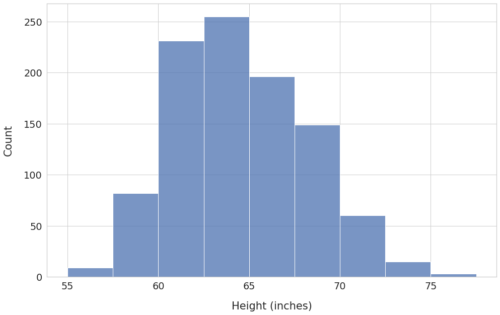
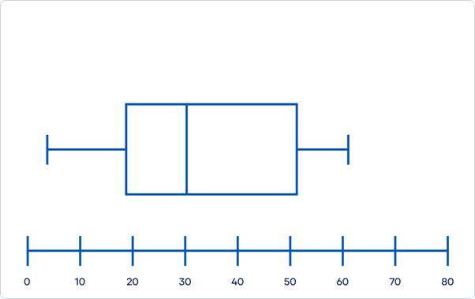
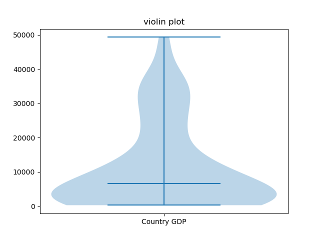
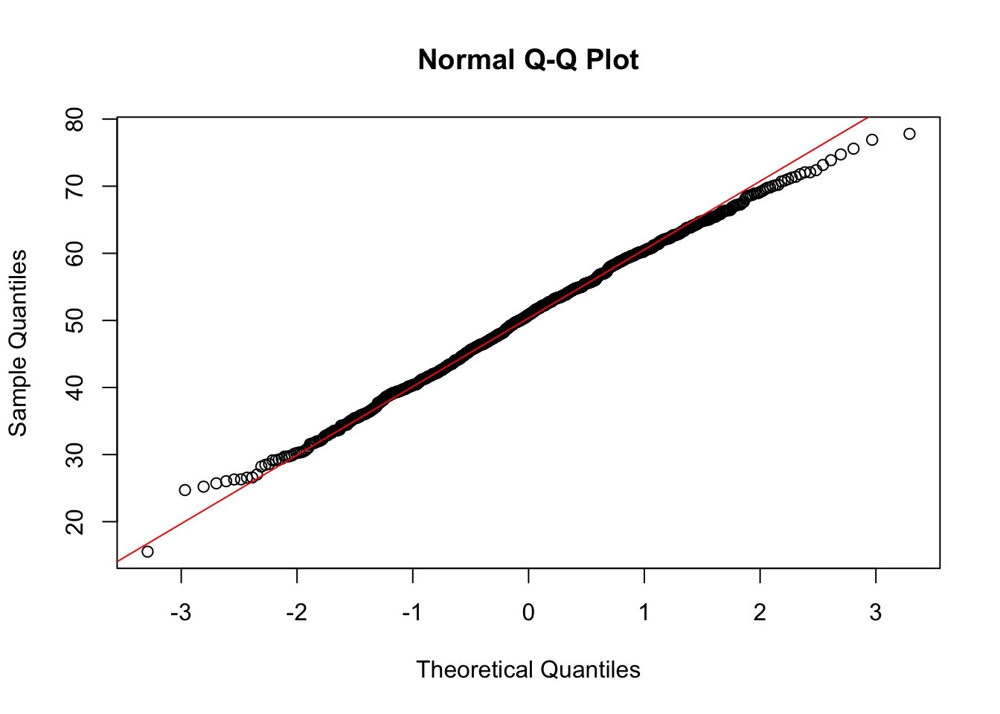

You’ve extracted ideological leaning scores (via DDR cosine similarity) for 500 political speeches.
Each speech is tagged with: speaker party, year, country.
What are the effects of ideology on variable y?
How do the variables x and z impact the scores?
Two types of statistics:
| Measure | When to use |
|---|---|
| Mean | Symmetric distributions, no extreme outliers |
| Median | Skewed distributions, robust to outliers |
| Mode | Categorical or heavily discrete data |
1, 1, 1, 3, 5, 6, 6, 7, 90
\[SE = \frac{SD}{\sqrt{n}}\]
SE shrinks as n grows → more data = more confidence




Tip
Always plot before you test. A number alone can hide a bimodal distribution.
shapiro.test(x)
H₀: “Left and right parties have the same mean ideology score”
H₁: “Left and right parties differ in terms of mean ideology score”
Warning
Always pair p-values with effect sizes and confidence intervals
Statistical significance ≠ practical importance.
| Effect | Cohen’s d | Pearson’s r | R² |
|---|---|---|---|
| Small | 0.2 | .10 | .01 |
| Medium | 0.5 | .30 | .09 |
| Large | 0.8 | .50 | .25 |
Example: Mean ideology score for left parties = 0.42 [0.38, 0.46]
t.test(x)$conf.int
Two types:
Independent samples — two different groups
Paired — same unit measured twice (e.g., pre/post election)
t.test(score ~ party, data = df, paired = FALSE)
effectsize package)If assumptions fail → use Mann-Whitney U (non-parametric):
wilcox.test(score ~ party, data = df)
aov(score ~ party, data = df)
then summary() and post-hoc: TukeyHSD()
leveneTest())Non-parametric alternative: Kruskal-Wallis
kruskal.test(score ~ party, data = df)
Two continuous variables? Start with correlation:
Example: Does ideology score correlate with speech length? With year?
cor.test(x, y, method = "pearson")
Does ideology score predict vote share?
Does it, controlling for country and year?
\[Y = \beta_0 + \beta_1 X + \varepsilon\]
lm(vote_share ~ ideology_score, data = df)
Call: lm(formula = vote_share ~ ideology_score)
Coefficients:
Estimate Std. Error t value Pr(>|t|)
(Intercept) 45.2 1.3 34.8 <.001 ***
ideology_score 8.4 1.1 7.6 <.001 ***
R-squared: 0.21Add more predictors to control for confounds:
vif() from carDiagnostics: plot(model) — four key plots
Or: check_model() from performance package (cleaner output, but sometimes slow)
AIC(model1, model2)anova(model1, model2)glm(won ~ ideology_score, family = binomial)exp(coef(model))Warning
Using lm() on count data violates the normality and homoscedasticity assumptions — predictions can even go negative
The solution: Generalized Linear Models (GLMs) with the right family
Poisson — the baseline model for counts:
glm(count ~ x, family = poisson)Negative Binomial — when counts are overdispersed (variance > mean), which is almost always the case with real social media data:
library(MASS)glm.nb(count ~ x, data = df)| Outcome | Model |
|---|---|
| Binary (yes/no) | Logistic regression |
| Count, mean ≈ variance | Poisson |
| Count, variance >> mean | Negative Binomial |
| Continuous, normal | Linear regression |
Tip
When in doubt between Poisson and NB, fit both and compare with AIC() — lower wins
Typical in our setting:
Standard regression assumes independence — violated here!
Ignoring clustering → inflated false positives
| Fixed Effects | Random Effects | |
|---|---|---|
| What | Variables you care about | Sources of clustering |
| Estimated | Yes, with coefficients | As variance components |
| Example | Party, year, ideology score | Speaker ID, country |
“Does ideology score predict vote share, accounting for the fact that speeches come from the same politicians?”
(1 | speaker_id) = random intercept per speaker(1 + ideology_score | speaker_id)Start with random intercepts. Add slopes only if theoretically motivated.
Ask yourself:
If yes → mixed-effects model is safer
Even when n per group is small, random effects can help partial pooling.
But make sure you have enough groups.
| Situation | Test |
|---|---|
| Compare 2 group means | t-test |
| Compare 3+ group means | ANOVA |
| One continuous predictor | Linear regression |
| Multiple predictors | Multiple regression |
| Grouped/clustered data | Mixed-effects model |
| Non-normal data, small n | Non-parametric alternatives |
| Element | Why |
|---|---|
| Descriptives (M, SD) | Reader can evaluate the data |
| Effect size | Separates significance from importance |
| Confidence interval | Shows precision of estimate |
| Model assumptions | Reader can trust the test |
| Sample size | Power and generalizability |
| Task | Package |
|---|---|
| Descriptives | psych, skimr |
| Visualization | ggplot2 |
| Normality | stats (built-in) |
| t-test / ANOVA | stats, car |
| Regression | stats, performance |
| Mixed models | lme4, lmerTest |
| Effect sizes | effectsize, MuMIn |